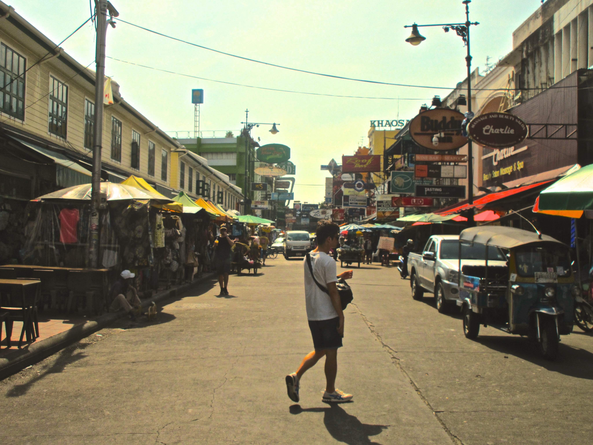

夕暮れの散歩。タイ。 2018.5.23

沖縄、渡嘉敷島で。 2019.2.3

故郷、香川の海。 2020.1.2

もうひとつの家。シアトル。 2016.8.25
夕暮れの散歩。タイ。 2018.5.23
沖縄、渡嘉敷島で。 2019.2.3
故郷、香川の海。 2020.1.2
もうひとつの家。シアトル。 2016.8.25
名前: 木村勇人 (キムラハヤト)
出身地: 香川県高松市
誕生日: 1997/01/04 (23歳)
香川県で育つ。 中学、高校で6年間ソフトテニスに励む。
高校卒業後に、ワシントン州シアトルに約2年半留学。現地の短期大学を卒業。
日本に帰国、上京。 同じくアメリカのテンプル大学日本校に編入、在籍中。(卒業予定: 2021年4月)
1年半以上の日英翻訳の経験有。グローバルな環境での生活を通して、偏見にとらわれないフレキシブルさと新しいことにチャレンジする好奇心があるチームプレイヤーに成長してきた。
| スキル | レベル |
|---|---|
| 英語 | ビジネス (TOEIC L&R 980, IELTS 7.0) |
| 日本語 | ネイティブ |
| Microsoft Word, Excel, Powerpoint | 基本操作 |
| Google Doc, Spreadsheet, Slide | 基本操作 |
| プログラミング (HTML, CSS), WordPress | 勉強中 |

基本的に運動が好きだけど、 中でもハイキングがお気に入り。自然とつながって、心も (体も？) リフレッシュ。 (やせる)

リラックス、集中するために、コーヒーとスイーツは欠かせない。ブラックコーヒー、カフェラテ、スタバのキャラメルマキアートがお気に入り。

知らないことを知るのと、英語を勉強するために洋書をよく読んでいる。ベストセラーの"Sapiens: A Brief History of Humankind"がとても面白かった。